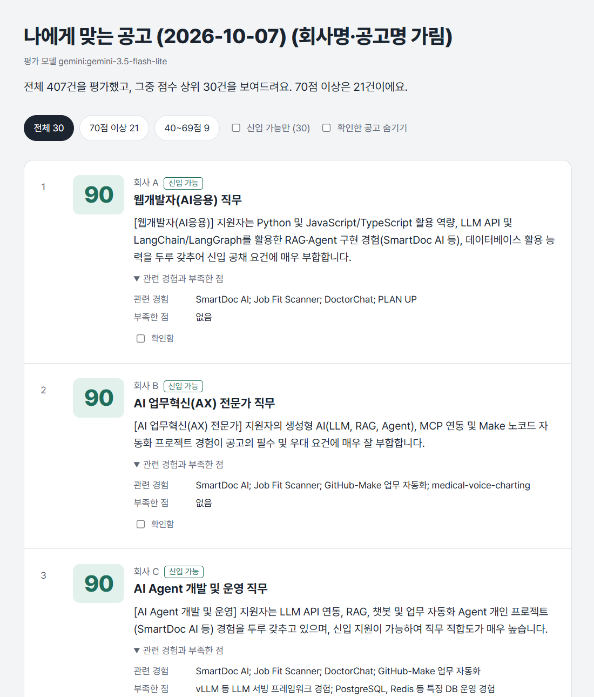

채용공고 수백 건을 자동으로 모으고, LLM이 내 이력과의 적합도를 평가해 상위 공고만 보여주는 도구
| 기간 | 2026.10 |
| 인원 | 개인 |
| 역할 | 문제 정의, 설계 판단, 검증 전체. 구현은 ChatGPT·Claude와 함께 진행 |
| 주요 기술 | Python, requests, BeautifulSoup, Tesseract OCR, Gemini API, SQLite |
| GitHub | sung-ju-park/job-fit-scanner |
사람인에서 서울·경기·충남, IT개발·데이터로 검색하면 9,600건이 나왔습니다. 하나씩 열어보는 건 불가능했고, 제목만 보고 고르면 본문 깊숙이 "경력 3년 이상"이 적힌 공고에 시간을 쓰게 됐습니다. 그래서 공고 본문까지 읽고 1차로 걸러주는 단계를 자동화하기로 했습니다.
평가 결과를 직접 확인하다가, 지원하려던 직무가 아닌 다른 직무 기준으로 점수가 매겨진 공고를 발견했습니다. 원하던 직무는 공고 본문 6,500자 이후에 있었는데, 처음에 로컬 모델에 맞춰 둔 4,000자 제한 때문에 Gemini가 그 부분을 아예 보지 못한 것이었습니다.
모델에게 문제가 있다고 보지 않고, 입력을 어떻게 만들어 보내는지를 다시 봤습니다. 본문 길이 제한을 모델별로 나눠 Gemini에는 15,000자까지 보내고, 이미 잘린 채 평가된 27건만 골라 다시 평가했습니다. 400건 전체를 다시 돌리지 않아 무료 API 한도도 아꼈습니다.
그 밖에 자동화 브라우저 접속이 첫 요청부터 막혔을 때는, 일반 브라우저로 원인을 좁힌 뒤 우회하지 않고 페이지가 본문을 불러오는 주소를 찾아 가벼운 일반 요청으로 바꿨습니다.
조건 검색 결과 403건 전체를 공고당 약 2초에 평가하고, 상위 30건을 점수와 이유, 관련 경험, 부족한 점과 함께 보여줍니다. 처음 한 번 전체를 훑은 뒤에는 새로 올라온 공고만 처리합니다.

실제 실행 결과 화면. 점수와 평가 내용은 그대로이고 회사명·공고 제목만 가렸습니다.
평가된 공고 중 20건을 점수 구간별로 고르게 뽑아 지원·보류·제외를 판단하고, AI 판단과 비교했습니다.
| 3단계 일치율 | 75% (20건 중 15건) |
| 한 단계 이내 | 95% (지원과 제외처럼 정반대로 엇갈린 건 1건) |
| Cohen's kappa | 0.63 |
| 놓친 지원 공고 | 0건 (지원하려던 7건 중 AI가 제외한 공고 없음) |
엇갈린 사례에서는 AI가 "지원할 수 있는가"를, 사람이 "지원하고 싶은가"를 기준으로 본다는 차이가 보였고, 점수 기준과 판단 구간의 경계가 어긋난 설계상 문제도 찾아 개선 방향으로 정리했습니다.